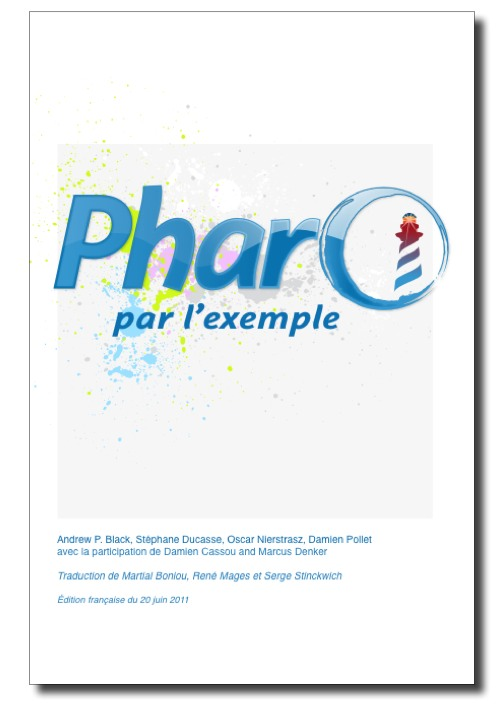

À propos de ce livre
 Pharo est un environnement de développement moderne et libre, inspiré du langage de programmation Smalltalk. Bien qu'étant le premier langage et environnement purement objet, Smalltalk est toujours en avance par de nombreux aspects sur ses successeurs grâce à son environnement entiérement modifiable à l'exécution et dans lequel tout est objet.
Pharo par l'Exemple est destiné aux étudiants et aux développeurs. Ce livre vous guidera dans la découverte du langage Pharo et de son environnement grâce à de nombreux exemples et exercices.
Thèmes abordés
Ce livre commence par Une visite de Pharo et vous guide ensuite dans la création d'Une première application. Le langage Smalltalk est ensuite introduit dans les chapitres intitulés Un résumé de la syntaxe et Comprendre la syntaxe des messages.
Le développement avec Pharo est couvert par les chapitres Le modèle objet de Smalltalk, L'environnement de programmation Pharo et SUnit (l'outil de tests unitaires). Les classes principales sont présentées dans Les classes de base, Les collections, Streams: les flux de données, l'interface Morphic sont aussi présentées à la fin de cette seconde partie. Seaside par l'exemple est le dernier chapitre de cette partie axée sur le développement avec Pharo.
La première édition de ce livre de ce livre se termine par les chapitres sur les Classes et méta-classes, La réflexivité et, en annexe, par une Foire Aux Questions.
Un livre ouvert
Ce livre est ouvert selon plusieurs aspects:
- Le livre est disponible complétement sous la forme d'un fichier PDF librement téléchargeable.
- Vous pouvez acquérir un exemplaire du livre sur Lulu (à venir). Vous pouvez également acheter la version PDF à partir du site Lulu, si vous préférez. C'est sans obligation! (mais nous serions heureux si vous vouliez apporter une contribution).
- Le contenu de ce livre est disponible sous les termes de la licence Creative Commons Attribution-ShareAlike. En résumé, vous êtes autorisé à partager et modifier librement ce livre, tant que vous respectez les conditions de la licence. Vous pouvez télécharger les sources LaTeX librement disponibles sur le dépôt github.
- Le code source des différents projets décrits dans ce livre sont disponibles sous licence libre sur le dépôt de code SqueakSource.
Nous souhaitons que ce livre s'agrandisse! Nous vous encourageons à contribuer par l'écriture de chapitres sur les aspects de Pharo que n'avons pas décrits. Si vous voulez participer, contactez-nous.